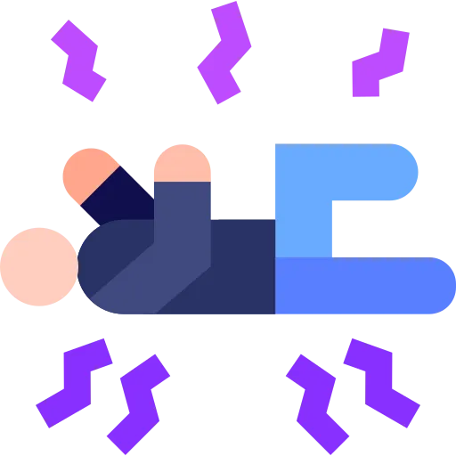

Seizures & Epilepsy
Master seizure classification, recognize status epilepticus as a medical emergency, understand antiepileptic medications, and prioritize safety-focused nursing interventions.
Learning Objectives
High-Yield Summary — Review This in 60 Seconds
The must-know facts from this guide, distilled for quick review.
- Seizure vs. Epilepsy: A seizure is a single event of abnormal electrical brain activity. Epilepsy is a chronic disorder defined as 2+ unprovoked seizures >24 hours apart, or 1 seizure with high recurrence risk.
- Two main categories: Focal (partial) seizures start in one brain area and may or may not impair awareness. Generalized seizures involve both hemispheres from the onset.
- Tonic-clonic (grand mal): Stiffening (tonic) then rhythmic jerking (clonic). Most dramatic, but absence seizures are the most commonly missed on exams.
- Absence (petit mal): Brief staring spells (5-30 sec), common in children. No postictal period. First-line treatment: ethosuximide or valproic acid.
- Status epilepticus: Seizure lasting >5 minutes OR repeated seizures without regaining consciousness. MEDICAL EMERGENCY. First-line: IV benzodiazepine (lorazepam 4 mg or diazepam 10 mg).
- During a seizure: Protect from injury, turn to side if possible, do NOT restrain, do NOT put anything in the mouth, time the seizure, maintain airway.
- Key AEDs: Phenytoin (Dilantin) — monitor therapeutic level 10-20 mcg/mL, watch for gingival hyperplasia. Valproic acid — monitor LFTs, teratogenic. Levetiracetam (Keppra) — fewer drug interactions.
- Seizure precautions: Padded side rails, bed in lowest position, suction at bedside, O2 available, IV access, seizure pads.
- Common triggers: Sleep deprivation, alcohol, medication non-compliance, flashing lights, fever, electrolyte imbalances, stress.
- Postictal phase: Confusion, drowsiness, headache, muscle soreness after a seizure. May last minutes to hours. Position on side, maintain airway, reorient gently.
Want the full breakdown? Keep reading below.
Pathophysiology & Etiology
A seizure occurs when there is a sudden, uncontrolled surge of electrical activity in the brain. Normally, neurons communicate through carefully regulated electrical impulses. During a seizure, a group of neurons fires excessively and synchronously, disrupting normal brain function.
Seizure Mechanism
- Excitation-inhibition imbalance: Excess excitatory neurotransmitter (glutamate) or deficient inhibitory neurotransmitter (GABA) shifts the balance toward hyperexcitability.
- Epileptogenic focus: A group of abnormal neurons with a lower firing threshold that can trigger surrounding neurons to fire synchronously.
- Kindling phenomenon: Repeated seizure activity lowers the threshold for future seizures — "seizures beget seizures."
- Spread of activity: Focal seizures begin in one area and may propagate to involve the whole brain (focal to bilateral tonic-clonic).
Seizure vs. Epilepsy
| Feature | Seizure | Epilepsy |
|---|---|---|
| Definition | Single event of abnormal electrical activity | Chronic disorder: 2+ unprovoked seizures >24 hrs apart |
| Causes | Can be provoked (fever, drugs, metabolic) or unprovoked | Underlying neurological predisposition |
| Treatment | Treat the cause; may not need long-term AEDs | Long-term AED therapy; lifestyle modifications |
| Recurrence | Low if provoked cause is corrected | High recurrence risk without treatment |
Common Causes & Triggers
| Provoked (Acute Symptomatic) | Unprovoked / Epilepsy Triggers |
|---|---|
| Fever (febrile seizures in children) | Medication non-compliance (#1 trigger) |
| Electrolyte imbalances (Na+, Ca2+, Mg2+, glucose) | Sleep deprivation |
| Drug/alcohol withdrawal | Stress / emotional exhaustion |
| Head trauma / TBI | Flashing or flickering lights (photosensitivity) |
| CNS infection (meningitis, encephalitis) | Alcohol use |
| Stroke, brain tumor, hemorrhage | Hormonal changes (catamenial epilepsy) |
| Eclampsia in pregnancy | Missed meals / hypoglycemia |
Clinical Pearl: Alcohol Withdrawal Seizures
Alcohol withdrawal seizures typically occur 12-48 hours after the last drink and are usually generalized tonic-clonic. They are a medical emergency because they can progress to status epilepticus or delirium tremens. Treatment: benzodiazepines (lorazepam or diazepam).
Seizure Classification (ILAE)
The International League Against Epilepsy (ILAE) classifies seizures by where they start in the brain and whether awareness is maintained. This classification guides treatment decisions.
Focal (Partial) Seizures
Focal Aware (Simple Partial)
- Consciousness PRESERVED throughout
- Motor, sensory, or autonomic symptoms
- Patient can describe the event afterward
- May have aura (warning sign)
Focal Impaired Awareness (Complex Partial)
- Consciousness IMPAIRED or lost
- Automatisms: lip smacking, fumbling, picking
- Post-event confusion / amnesia for event
- Most common adult focal seizure type
Focal to Bilateral Tonic-Clonic
- Starts focal, then spreads to both hemispheres
- Previously called "secondarily generalized"
- Aura may precede the convulsion
Generalized Seizures
Tonic-Clonic (Grand Mal)
- Tonic phase: stiffening, LOC, may cry out
- Clonic phase: rhythmic jerking
- Lasts 1-3 minutes, postictal confusion
- Risk: tongue biting, incontinence, injury
Absence (Petit Mal)
- Brief staring spells (5-30 seconds)
- Abrupt onset and offset
- NO postictal period
- Common in children ages 4-12
Other Generalized Types
- Myoclonic: Brief, shock-like jerks
- Atonic: "Drop attacks" — sudden loss of tone
- Tonic: Sustained stiffening without clonic
NCLEX Alert: Absence Seizures
Absence seizures are a favorite NCLEX topic! Key features: brief staring (looks like daydreaming), no postictal period, can occur dozens of times per day, common in school-age children. Teachers often notice before parents. First-line treatment: ethosuximide (if absence only) or valproic acid (if absence + other seizure types). Carbamazepine and phenytoin can WORSEN absence seizures.
Assessment & Diagnosis
Seizure Phases
The Three Phases of a Seizure
What to Observe & Document During a Seizure
Timing
Time of onset, duration, time to full recovery. Call for help if >5 minutes.
Motor Activity
Type of movement (tonic, clonic, myoclonic), body parts involved, symmetry vs. one side.
Level of Consciousness
Aware or unaware? Responsive to voice? Eye position and deviation. Automatisms?
Airway & Breathing
Cyanosis, apnea, secretions, breathing pattern. Tongue biting, incontinence, vomiting.
Diagnostic Workup
| Test | Purpose | Key Points |
|---|---|---|
| EEG (Electroencephalogram) | Gold standard for seizure diagnosis | Records brain electrical activity; may be normal between seizures. Video-EEG is most useful. |
| MRI Brain | Identify structural causes | Tumors, sclerosis, malformations, stroke. Preferred over CT for epilepsy workup. |
| CT Head | Emergent evaluation | Rule out hemorrhage, mass effect. Used first in ED for new-onset seizure. |
| Labs | Rule out metabolic causes | BMP (Na+, Ca2+, glucose, Mg2+), CBC, LFTs, toxicology screen, AED levels. |
| Lumbar Puncture | Rule out CNS infection | If meningitis/encephalitis suspected. Perform after CT to rule out mass/herniation risk. |
Status Epilepticus
Status epilepticus (SE) is defined as a seizure lasting longer than 5 minutes, or two or more seizures without the patient regaining full consciousness between them. It is a medical emergency with significant morbidity and mortality if not treated rapidly.
Status Epilepticus Emergency Protocol
Definition: Seizure >5 minutes OR 2+ seizures without return to baseline consciousness. Mortality: 20% if untreated.
ABCs & Safety
Maintain airway, suction, O2. Position on side. Establish IV access.
Benzodiazepine
Lorazepam 4 mg IV (first-line) or diazepam 10 mg IV. May repeat once in 5-10 min.
AED Loading
If seizure persists: Fosphenytoin 20 mg PE/kg IV or valproic acid or levetiracetam.
Refractory SE
If still seizing: intubation + continuous infusion (midazolam, propofol, or pentobarbital).
Critical: Why Status Epilepticus Is Dangerous
Prolonged seizure activity causes: hypoxia (respiratory muscle fatigue), hyperthermia (massive muscle activity), rhabdomyolysis (muscle breakdown), metabolic acidosis, cerebral edema, and permanent neuronal death. The longer the seizure, the harder it is to stop and the worse the outcome.
NCLEX Alert: Benzodiazepines First!
The first medication given for status epilepticus is ALWAYS a benzodiazepine. Lorazepam (Ativan) IV is preferred because it has a longer duration of action in the brain than diazepam. Monitor for respiratory depression — have bag-valve-mask and intubation equipment at bedside. If no IV access, give midazolam IM or diazepam rectally.
Priority Nursing Interventions
During a Seizure (Ictal Phase)
Protect from Injury
Move sharp objects away. Ease the patient to the floor if standing. Place padding under head. Do NOT restrain — guide gently.
Maintain Airway
Turn to side (recovery position) when safe to do so. Suction secretions as needed. Apply supplemental O2. Do NOT insert anything into the mouth.
Time the Seizure
Note onset time and duration. If >5 minutes, activate rapid response for status epilepticus. Document all observations.
Stay & Call for Help
Never leave the patient alone. Call for additional help. Prepare IV access and emergency medications if not already established.
NEVER Do These During a Seizure!
- Do NOT put anything in the patient's mouth — they cannot swallow their tongue. Objects cause broken teeth, lacerations, or aspiration.
- Do NOT restrain the patient — this can cause musculoskeletal injuries, fractures, or dislocations.
- Do NOT give oral medications — aspiration risk is too high during active seizure.
After a Seizure (Postictal Phase)
- Position on side (recovery position) to maintain airway and drain secretions
- Assess neurological status: LOC, orientation, pupil response, motor function
- Assess for injuries: Tongue biting, head injury, shoulder dislocation, skin breakdown
- Provide a quiet environment — dim lights, reduce stimulation
- Reorient gently — patients may be confused, combative, or drowsy. Do not restrain.
- Document: Total seizure duration, type of movements, postictal duration, vital signs, any injuries
- Check blood glucose — rule out hypoglycemia as a cause or result of prolonged seizure
Seizure Precautions (Inpatient)
| Precaution | Rationale |
|---|---|
| Pad side rails | Prevent head/limb injury during seizure |
| Bed in lowest position | Minimize fall height |
| Suction at bedside | Clear airway secretions immediately |
| O2 and bag-valve-mask at bedside | Provide ventilation if needed |
| IV access maintained | Rapid medication administration |
| Seizure pad / oral airway at bedside | Ready for emergency use post-seizure |
| Call light within reach | Patient can alert staff to aura |
Antiepileptic Drug (AED) Management
Antiepileptic drugs (AEDs) are the mainstay of epilepsy treatment. The goal is seizure freedom with minimal side effects. Most patients require long-term (often lifelong) therapy.
| Drug | Seizure Type | Therapeutic Level | Key Nursing Considerations |
|---|---|---|---|
| Phenytoin (Dilantin) | Focal, tonic-clonic | 10-20 mcg/mL | Gingival hyperplasia, cardiac arrhythmias (slow IV push), many drug interactions, check free level if low albumin |
| Valproic Acid (Depakote) | Most seizure types | 50-100 mcg/mL | Hepatotoxicity (monitor LFTs), pancreatitis, TERATOGENIC (Category X), weight gain, thrombocytopenia |
| Carbamazepine (Tegretol) | Focal, tonic-clonic | 4-12 mcg/mL | Aplastic anemia, agranulocytosis (monitor CBC), hyponatremia (SIADH), autoinduction, rash (Stevens-Johnson risk) |
| Levetiracetam (Keppra) | Focal, generalized | Not routinely monitored | Behavioral changes (irritability, aggression), fewer drug interactions, renal elimination, no hepatotoxicity |
| Ethosuximide (Zarontin) | Absence ONLY | 40-100 mcg/mL | First-line for absence seizures only. GI distress, blood dyscrasias. Does NOT treat tonic-clonic. |
| Lamotrigine (Lamictal) | Focal, generalized | 3-14 mcg/mL | Rash (Stevens-Johnson syndrome — STOP drug immediately if rash appears). Must titrate slowly. |
| Lorazepam (Ativan) | Status epilepticus | N/A (acute use) | First-line for status epilepticus. Respiratory depression — monitor closely. Short duration (hours). |
Critical: Phenytoin IV Administration
Phenytoin must be given SLOWLY IV (no faster than 50 mg/min in adults). Rapid infusion can cause fatal cardiac arrhythmias and hypotension. Always mix in normal saline only (precipitates in dextrose). Use a filter. Monitor cardiac rhythm during infusion. Fosphenytoin (Cerebyx) is a safer IV prodrug alternative that can be given faster.
Clinical Pearl: Dilantin & Gingival Hyperplasia
Up to 50% of patients on long-term phenytoin develop gingival (gum) hyperplasia — overgrowth of gum tissue. Teach patients: excellent oral hygiene, regular dental visits, use a soft-bristle toothbrush, and floss daily. Also watch for: hirsutism, acne, coarsened facial features, and nystagmus (sign of toxicity).
General AED Nursing Principles
- Never stop AEDs abruptly — abrupt withdrawal can trigger status epilepticus. Always taper gradually.
- Monitor therapeutic drug levels — especially phenytoin, valproic acid, and carbamazepine. Draw trough levels (before next dose).
- Assess for toxicity signs: Nystagmus, ataxia, drowsiness, slurred speech, confusion.
- Check drug interactions: Many AEDs are metabolized by CYP450 enzymes and interact with other medications (warfarin, OCPs, etc.).
- Pregnancy considerations: Valproic acid and phenytoin are teratogenic. Women of childbearing age need folate supplementation and contraception counseling.
Pediatric Considerations
Seizures are one of the most common neurological emergencies in pediatrics. Children have unique seizure types, causes, and management considerations that differ significantly from adults.
Febrile Seizures — The Most Common Pediatric Seizure
Febrile seizures occur in 2-5% of children ages 6 months to 5 years during rapid temperature elevation (typically >102.2°F / 39°C). Simple febrile seizures are generalized, last <15 minutes, and do not recur within 24 hours. They do NOT require long-term AED treatment and have an excellent prognosis. Educate parents: febrile seizures do not cause brain damage or epilepsy in the vast majority of cases.
Febrile Seizures: Simple vs. Complex
| Feature | Simple Febrile | Complex Febrile |
|---|---|---|
| Duration | <15 minutes | >15 minutes |
| Type | Generalized (whole body) | Focal (one side) or generalized |
| Recurrence in 24 hrs | Does not recur | May recur within 24 hours |
| Risk of Epilepsy | ~1% (same as general population) | Increased risk (~4-6%) |
| Treatment | Treat fever, reassurance | May need further evaluation (EEG, MRI) |
Pediatric-Specific Seizure Types
- Infantile spasms (West syndrome): Onset 3-12 months. Clusters of brief flexion or extension spasms, often upon waking. EEG shows hypsarrhythmia. Treatment: ACTH or vigabatrin. URGENT referral needed.
- Lennox-Gastaut syndrome: Multiple seizure types beginning ages 2-6. Intellectual disability common. Difficult to treat, often drug-resistant.
- Childhood absence epilepsy: Ages 4-12. Multiple daily staring spells. Excellent prognosis — most outgrow it by adolescence. First-line: ethosuximide.
- Juvenile myoclonic epilepsy: Onset in adolescence. Morning myoclonic jerks + absence + tonic-clonic. Lifelong treatment usually needed. First-line: valproic acid (but use levetiracetam in females of childbearing age).
Pediatric Medication Differences
- Dose by weight: All pediatric AED doses are calculated per kg body weight
- Rectal diazepam: Used for home management of prolonged seizures in children (Diastat)
- Intranasal midazolam: Newer option for out-of-hospital seizure rescue
- Phenobarbital: Still used in neonates for seizures (rarely used in adults)
- Valproic acid caution: Risk of fatal hepatotoxicity is highest in children <2 years on multiple AEDs
Parent & Caregiver Education
- Seizure first aid: Stay calm, protect from injury, turn to side, time the seizure, do NOT put anything in the mouth
- When to call 911: Seizure >5 minutes, first-ever seizure, difficulty breathing, injury during seizure, seizure in water
- Fever management: For febrile seizure history — treat fever early with acetaminophen or ibuprofen, but prophylactic antipyretics do NOT prevent febrile seizures
- School action plans: Ensure school has seizure action plan, trained staff, and rescue medication if prescribed
- Activity safety: Swimming only with supervision, avoid heights, helmet for bike riding. Most activities can continue with appropriate precautions.
Test Your Knowledge
Ready to challenge yourself? Take the NCLEX-style quiz on Seizures & Epilepsy.
Start Practice QuestionsKey Takeaways
Focal vs. Generalized: Focal starts in one area (may spread). Generalized involves both hemispheres from onset. Classification determines treatment.
Status Epilepticus: Seizure >5 min is an emergency. First-line: lorazepam IV. Then fosphenytoin. Monitor for respiratory depression.
Safety Priority: Protect from injury, maintain airway, turn to side, time seizure. NEVER restrain or put anything in the mouth.
Phenytoin (Dilantin): Therapeutic level 10-20 mcg/mL. Slow IV push only. Gingival hyperplasia. Many drug interactions.
Never Stop AEDs Abruptly: Sudden withdrawal can cause status epilepticus. Always taper gradually.
Absence Seizures: Brief staring, no postictal phase, common in children. Treat with ethosuximide. Carbamazepine worsens them.